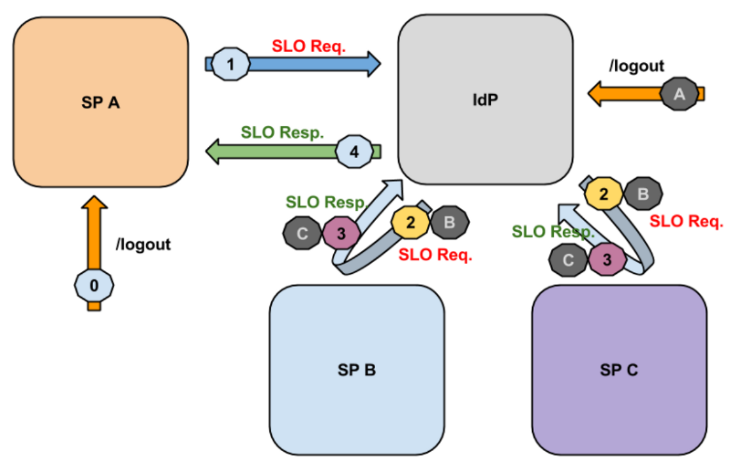
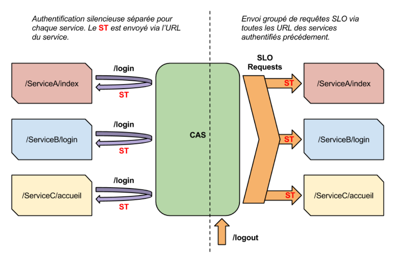

Atelier Authentification
Single Logout (SLO)
Aussi appelé “Global Log-Out” ou “Single Sign-Out”
Julien Gribonvald - GIP RECIA
Plan
- Le SSO mais pas sans le SLO
- Les bonnes pratiques
- Les protocols
- Les cas particuliers
Pourquoi ?
- Sécurité
- Accès via des terminaux en libre service (sans session utilisateur)
- Confort pour les utilisateurs
Les bonnes pratiques
- Définir une statégie et s'y tenir (sinon incompréhensions pour les utilisateurs), exemples :
- Dans notre contexte nous n'avons rendu possible la connexion et la déconnexion qu'en passant par le portail,
aucun bouton de déconnexion ne doit être présenté ailleurs.
- Si déconnexion possible dans une application alors cela doit lancer un global logout
- Essayer de déléguer la gestion de la session applicative au client CAS, ou en dernier recourt avoir une page de logout spécifique à l'application pouvant être appelée
Le protocol SLO en SAML 2.0 (Shibboleth)

Le protocol SLO SAML 2.0 dans Shibboleth
Le protocol SLO de CAS

Le protocol SLO de CAS
- Depuis version 3.1 du serveur et les clients officiels
(phpCAS,
java,
.NET)
- Requête HTTP POST en back channel
- Facilité d'implémentation en utilisant les clients CAS ( et
- Des limitations mais avec des solutions techniques
Les cas particuliers (1/2)
- Applications en load-balancing sans partage de session
- Toujours lier/initialiser la session à partir du ST, après deux choix :
- principe de persister la session : en BD, dans un fichier sur un espace partagé (NetApp), système ehcache/memcache (cf phpCAS ou client java) => N'importe quelle instance peut détruire la session
- répliquer la requête de logout côté client vers toutes les autres instances de l'application, solutions :
Les cas particuliers (2/2)
- Applications dont la session est définie par un cookie / ou application avec déconnexion sur un chemin spécifique
- modifier la page de déconnexion CAS afin d'appeler les différentes url des applications concernées (via iframe cachée / image ou + évoluée via javascript)
example solution GIP RECIA
CAS SLO front channel
- Solution expérimentale d'un SLO front channel (serveur cas v4.0)

CAS SLO front channel
- Solution expérimentale d'un SLO front channel (serveur cas v4.0)
- inspirée de la spécification SAML 2, méthode SAML HTTP Redirect binding
- doit résoudre les pbs précédents mais nécessite l'utilisation de clients CAS compatibles (client java prochaine v3.4)
- solution expérimentale qui va donc évoluer ou qui peut changer, et aucun paramétrage par IHM
- une faiblesse principale si une redirection échoue cela casse la chaîne du SLO
- la prochaine version du client CAS java sera capable en plus de gérer un appel logout via le navigateur
Conlusion
- Le SLO ce n'est pas compliqué il y a des solutions pour toutes les situations !
-
Une documentation avec des exemples de retours d'expérience (à enrichir) :
GT Auth - SLO
- Des documentations/exemples sur l'implémentation du SLO avec :
Merci de votre attention
Questions ?